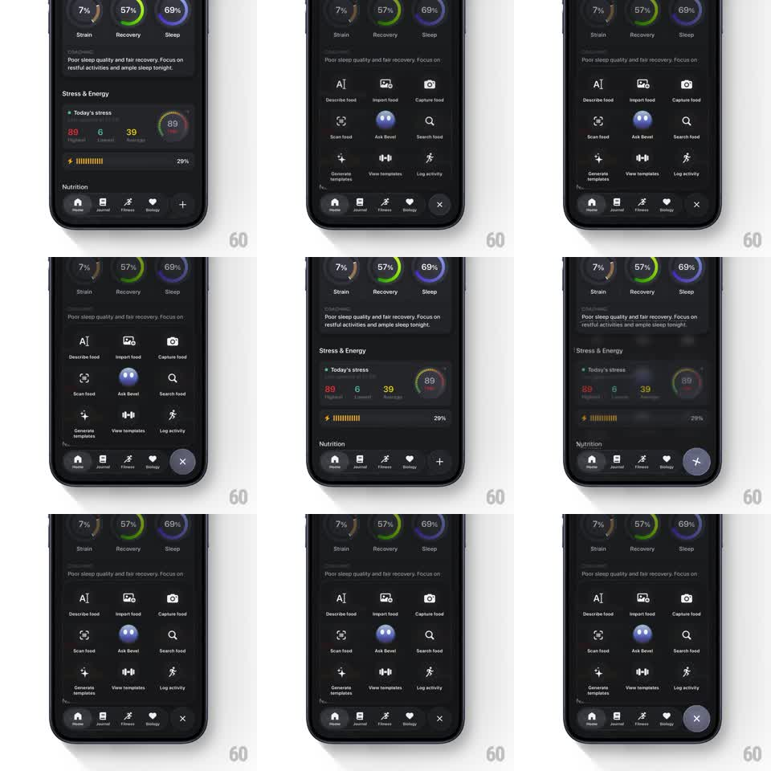

Media
Frame-by-frame

Rebuild this interaction 1:1: Bevel's FAB menu - tapping the + in the tab bar rotates it into an X while a 3x3 quick-actions grid scales up over a blurring dashboard; tapping again reverses it.

Rebuild this interaction 1:1: Bevel's FAB menu - tapping the + in the tab bar rotates it into an X while a 3x3 quick-actions grid scales up over a blurring dashboard; tapping again reverses it. ## Integration Integration: stack-agnostic spec - springs given as stiffness/damping, timed motions as duration + curve; map every value to your framework and animation library of choice. ## Scene Dark health dashboard (Strain / Recovery / Sleep rings, Stress & Energy card, Nutrition) with a tab bar whose trailing + button is the FAB. The open menu: a 3x3 grid of action tiles (Describe food, Import food, Capture food, Scan food, Ask Bevel, Search food, Generate templates, View templates, Log activity) covering the dashboard area. ## Motion spec Pattern: FAB morphs plus-grid while the menu scales in over a blur. - The + rotates 45 degrees into an X over 250ms with a slight overshoot (to 50 degrees, spring ~300/16). - The dashboard blurs (0 -> 16px) and dims over 300ms. - The menu scales from 0.92 to 1 anchored on the FAB (spring ~280/16) while tiles fade in row by row from the bottom (80ms stagger per row). - The Ask Bevel tile (purple accent) pops a touch bigger than its neighbors (scale 1.05 briefly). - Close: grid scales to 0.95 and fades (200ms), blur clears, X rotates back to +. ## Calibration - The menu grows from the FAB's position - the eye should track one continuous expansion. - Tile stagger is bottom-up, nearest the FAB first. ## Reduced motion Menu crossfades (200ms); icon swaps without rotation. ## Don't miss - The X sits exactly where the + was - no drift during the rotation. - The grid covers content but the tab bar stays visible and live.